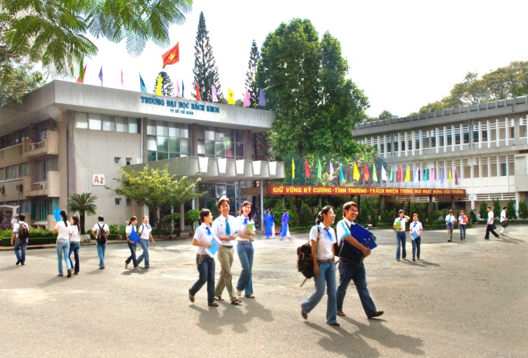

Lịch sử hình thành và phát triển của Trường Đại học Bách Khoa

THỜI KỲ THÀNH LẬP VÀ CÁC TRƯỜNG THÀNH VIÊN (1957 – 1975)
Trung tâm Quốc gia Kỹ thuật (1957 – 1972)
Lịch sử trường Đại học Bách Khoa – ĐHQG TP. HCM đã trải qua 50 năm. Tiền thân của Trường Đại học Bách Khoa là Trung tâm Quốc gia Kỹ thuật (TTQGKT) được thành lập ngày 29/6/1957 với nhiệm vụ “… đào tạo thanh niên các ngành học Cao đẳng Kỹ thuật cần thiết cho nền Kinh-Tế và Kỹ -Nghệ Quốc-Gia”.
Nhưng nếu tính về truyền thống lâu đời của các trường thành viên thuộc TTQGKT thì có lẽ phải tính từ những năm đầu thế kỷ 20.
Cho đến những năm đầu thập niên 70, TTQGKT có 5 trường, mỗi trường mang một sắc thái, lịch sử riêng với khoảng 3.000 kỹ sư và cán sự tốt nghiệp.
Trường Cao đẳng Công chánh
Được thành lập từ năm 1911, đến năm 1917 là thành viên của Trường Cao đẳng Đông Dương. Từ năm 1919 trường đào tạo các chuyên viên, cán sự và kỹ sư công chánh. Ngày 9/3/1945 Nhật đảo chính Pháp, trường đóng cửa. Đến kháng chiến chống Pháp, vì lý do an ninh, ngày 1/10/1947, Pháp dời trường vào Sài Gòn. Từ năm 1950, trường đào tạo kỹ sư công chánh Đông Dương và tổ chức thi tuyển ngạch Kỹ sư ở các xứ thuộc địa (Cao Miên, Lào). Hệ thứ nhất tuyển những học sinh lớp đệ nhị cấp là những người đã trải qua lớp dự bị và học hai năm những kiến thức kỹ thuật cần thiết và những người có bằng tú tài Pháp hay bằng tú tài Pháp – Việt, hoặc những người đã có chứng chỉ cử nhân (toán đại cương hay vật lý đại cương). Các lớp học ở trường Cao đẳng Công chánh do các Giáo sư của các sở giáo dục, công chánh, kinh tế, y tế, địa chánh … giảng dạy.
Năm 1957, trường là thành viên của Trung tâm Quốc gia Kỹ thuật. Từ năm 1973 – 1974, Trường Cao đẳng Công chánh chỉ đào tạo kỹ sư công chánh và kỹ sư địa chánh. Chương trình của trường là 3 năm, không kể năm thứ nhất học tại trường khoa học. Nội dung đào tạo là các kiến thức kỹ thuật tổng quát trong các lĩnh vực có liên quan.
Trường Quốc gia Kỹ sư Công nghệ
Trường Quốc gia Kỹ sư Công nghệ được thành lập năm 1956 và được sát nhập làm thành viên của TTQGKT vào năm 1957. Trường đào tạo các kỹ sư công nghệ các ngành cơ khí, đúc luyện kim, kỹ nghệ sắt, ô tô …
Trường Cao đẳng Điện học
Trường Cao đẳng Điện học nguyên là trường Vô tuyến điện (Ecole de Radio – Electricité). Trường Vô tuyến điện được thành lập trên cơ sở Khoa Nhân viên vô tuyến điện được thành lập ngày 23/11/1947 trực thuộc trường Đại học Khoa học Sài Gòn, làm nhiệm vụ đào tạo nhân viên kỹ thuật vô tuyến điện hạng 1, hạng 2. Có thời gian Khoa đóng ở khuôn viên trường Lycée Petrus Ký Sài Gòn. Đến tháng 01/1949 trở thành trường Vô tuyến điện, đào tạo kỹ thuật viên vô tuyến điện (2 năm), điện tín viên, trắc lượng viên, chuẩn bị các kỳ thi về hàng hải và hàng không. Năm 1950, Trường trực thuộc Bộ Quốc gia Giáo dục, sau đó là Nha Kỹ thuật và Mỹ thuật học vụ.
Năm 1957, Trường sát nhập làm thành viên của TTQGKT và đổi tên là trường Cao đẳng Điện học. Trường đào tạo kỹ sư điện, cán sự điện và điện tử, huấn luyện trung cấp và thợ chuyên môn cho các xí nghiệp công tư và quân nhân của Bộ Quốc phòng (chính quyền Sài Gòn).
Năm 1973 – 1974, trường Cao đẳng Điện học chỉ đào tạo chuyên viên, kỹ sư, còn cấp cán sự điện được chuyển qua trường Đại học Chuyên nghiệp Trung cấp.
Trường Cao đẳng Hóa học
Thành lập năm 1962 ngay trong TTQGKT, đào tạo cán sự hóa học. Đến năm 1968, Trường bắt đầu đào tạo kỹ sư hóa học. Từ năm 1973 – 1974, Trường chỉ còn đào tạo kỹ sư, không đào tạo cấp cán sự.
Trường Việt Nam Hàng hải
Trường Việt Nam Hàng hải được thành lập năm 1951, chương trình 8 tháng đào tạo thuyền viên hàng hải. Năm 1957, Trường được sát nhập vào TTQGKT. Trường có hai Ban: Ban Thuyền trưởng và Ban Cơ khí. Trường đặt nặng phần thực hành và kinh nghiệm hàng hải. Sau khi hoàn thành chương trình đào tạo trong 2 năm, sinh viên cần tập sự và hành nghề trên các thương thuyền trước khi trở về lớp học tu nghiệp 3 tháng để thi tốt nghiệp.
Năm 1960 Trường đào tạo cấp cán sự với chương trình 2 năm cho thuyền viên, lái máy, sĩ quan hàng hải.
Năm 1973 Trường đào tạo kỹ sư hàng hải, với chương trình 4 năm.
Trên khuôn viên 14,5 ha của tổng Phú Thọ hình thành một trung tâm đào tạo các kỹ sư và cán sự kỹ thuật, với hệ thống bảy tòa nhà hai và ba tầng gồm văn phòng, lớp học (giảng đường), thư viện, các phòng thí nghiệm và các xưởng thực tập. Trung tâm cũng có khu thể thao, thiết kế ban đầu dành cho 1.600 sinh viên của tất cả các hệ và 200 cán bộ, nhân viên, giáo sư. Muốn vào các trường cao đẳng của Trung tâm Quốc gia Kỹ thuật, người học phải có bằng tú tài 2 (trung học đệ nhị cấp), ban B (toán) và phải qua một kỳ thi tuyển. Thời gian học từ 4 đến 5 năm (tùy theo ngành) cho bậc kỹ sư và 2 năm cho bậc cán sự.
Các mốc thời gian quan trọng
|
1957 |
Trung tâm Kỹ thuật Quốc gia Phú Thọ được thành lập, gồm 4 trường thành viên: Cao Đẳng Công Chánh, Cao Đẳng Điện Lực, Quốc Gia Kỹ Sư Công Nghệ và Việt Nam Hàng Hải. |
|
1972 |
Trung tâm được đổi tên thành Học Viện Kỹ Thuật Quốc Gia. Khoa Kỹ thuật và Khoa Khoa học Cơ bản được thành lập. |
|
1973 |
Học viện được đổi tên thành Trường Đại học Kỹ Thuật. |
|
1975 |
Kết thúc chiến tranh, thống nhất đất nước. |
|
1976 |
Trường được mang tên Đại học Bách Khoa với 5 khoa chuyên ngành: Kỹ thuật Xây dựng, Kỹ thuật Điện, Kỹ thuật Thủy lợi, Kỹ thuật Cơ khí và Kỹ thuật Hóa học. |
|
1978 |
Khoa Địa chất được thành lập. |
|
1990 |
Chương trình đào tạo sau Đại học được hình thành. |
|
1991 |
Khoa Kỹ thuật Thủy lợi và Xây dựng được sát nhập thành khoa Kỹ thuật Xây dựng. |
|
1992 |
Khoa Quản lý Công nghiệp được thành lập. |
|
1993 |
Hệ thống đào tạo theo tín chỉ được áp dụng. Khoa Khoa học và Kỹ thuật Máy tính được thành lập. |
|
1996 |
Trường Đại học Bách Khoa trở thành thành viên của Đại học Quốc gia Tp. Hồ Chí Minh. |
|
1999 |
Khoa Kỹ thuật Môi trường được thành lập. |
|
2000 |
Khoa Kỹ thuật Giao thông được thành lập. |
|
2001 |
Khoa Công nghệ Vật liệu được thành lập. |
|
2003 |
Khoa Khoa học Ứng dụng được thành lập. |
|
2005 |
Trường Đại học Bách Khoa được chính phủ trao tặng danh hiệu “ Anh hùng Lao động trong thời kỳ đổi mới”. |
|
2007 |
Trường Đại học Bách Khoa được chính phủ trao tặng “Huân chương Độc lập’ |